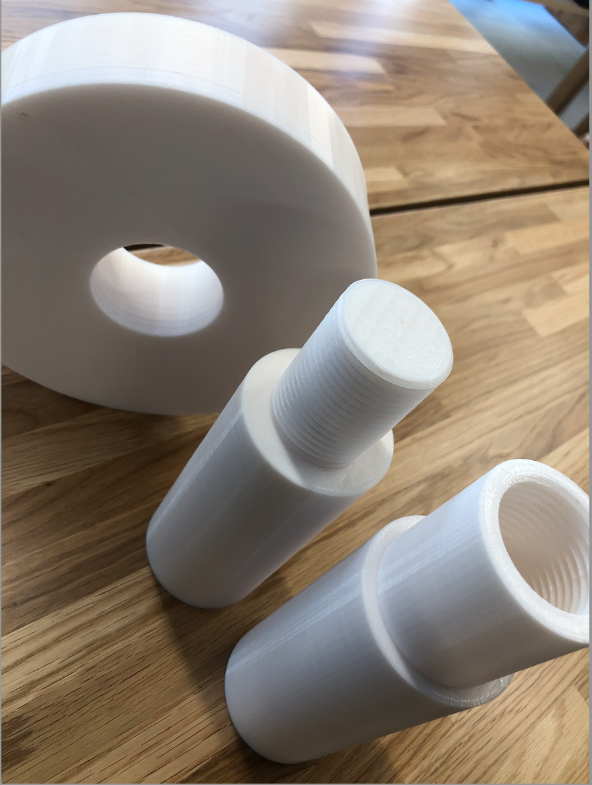
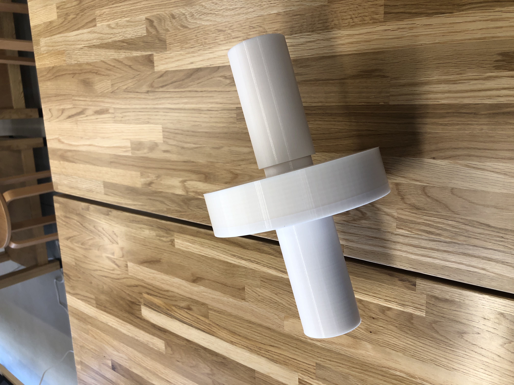

・腹筋ローラーは、みんな一度は見たことあると思う。それは、腹筋ローラーが比較的多くの人が使用することが可能なため、
利用者が多いからだと思う。そんな身近なトレーニング用品を３Dプリンターで作ってみた。

・上記のように、三つの部品に分けられている。腹筋ローラーの棒の部分は、ネジではめることで、安定感とタイヤが動きすぎてしまうことを防止している。
また、タイヤをはめる部分と、ネジで固定する場所で太さを変え、タイヤの安定感をさらに増やした。

・このように綺麗にハマり、何度か使ったが安定していた。色々な人でも試したが、問題なく使うことができた。